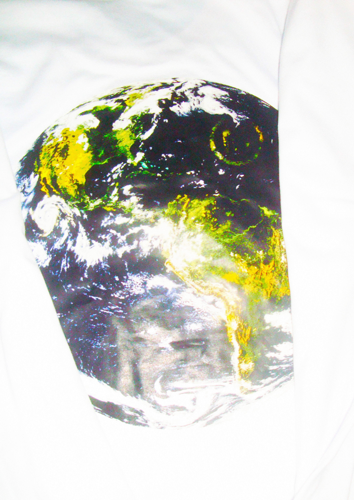
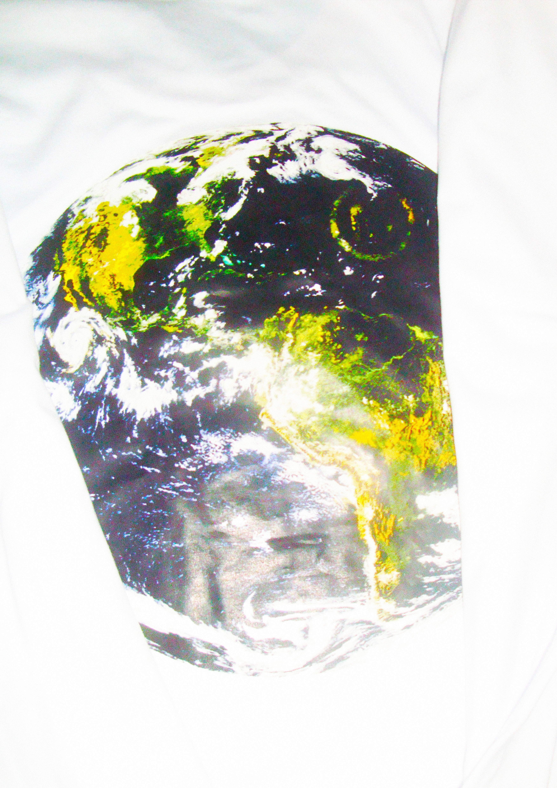

Bienvenidos a MAE
El final de todo mi proyecto 366*POSTERS. Quiero agradecer a los que están acá,
ya que con su apoyo pude terminar este proyecto hermoso, no olviden que son parte de todo esto.
Como forma de agradecimiento quiero entregarles este último proyecto llamado
MAE que son las iniciales de "MOMENTO ANTES del EGO". Esto es un viaje introspectivo a una parte más sincera de mí. Todo esto resumido en 3 remeras conceptuales donde cada una trabaja un concepto distinto de tratar el ego.
NAIVE SINCERITY/Sinceridad Ingenua
Esta remera refleja mis diseños y cómo cada uno cuenta una historia que, en ocasiones, queda incompleta. Nunca me atreví a mostrarme tal cual soy, por eso elegí hablar a través de mis obras. Estas, lejos de definirme como persona, retratan los momentos que viví, los fragmentos de lo que fui en distintos instantes. Cada línea, cada trazo, lleva consigo una carga emocional, una historia que no terminé, porque a veces las mejores historias son las que quedan abiertas a la interpretación del espectador.
CUENTAN UNA HISTORIA QUE NO TERMINÉ
IRONY/Ironía
El concepto de esta remera se centra en la sátira y el humor con los que abordé cada obra. Siempre me tomo las cosas con humor y enfrento cada obstáculo de la misma manera, como se refleja en algunos pósters donde confieso que son solo relleno, ya que atravesaba bloqueos creativos que no me permitían tener una idea clara para crear una obra. Y, por eso, en ocasiones llegué a creerme irremplazable.
QUIEN SE CREE IRREMPLAZABLE, ESTÁ EN CAMINO A SER OLVIDADO
POST-IRONY/Postironia
El pensamiento de que cada obra que hagas debe tener alma lo voy a mantener siempre, ya que, más allá de la libre interpretación, el autor es un mundo y quiere contar una historia, una anécdota, un viaje, un amor, una tragedia. Esas cosas tienen una connotación en su obra final. Por eso...
LO QUE HACE AL ARTE ES EL ALMA DEL CREADOR
Muchas gracias por sus interacciones e ideas, fueron fundamentales para hacer esto realidad.


 
